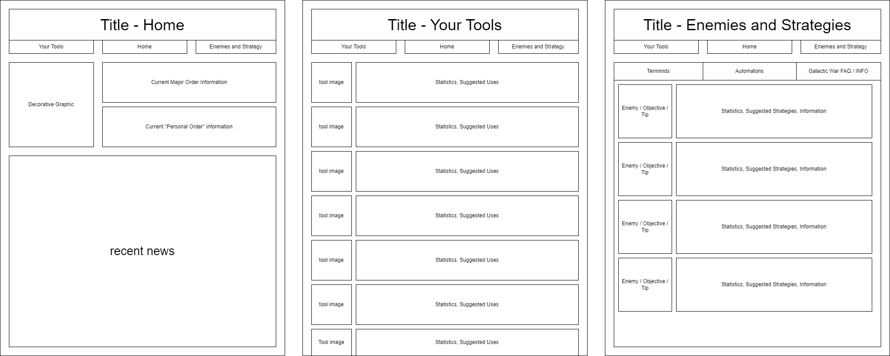

Site Purpose
The general purpose of the site is to provide players of the game with a place they can learn more about the game - things like weapon statistics, enemy strategies, mechanics, and more.
Scenarios
What weapons can deal damage to
automaton gunships
?How does the
invasion
mechanic work?What is the current Major Order?
Color Schema
the color schema of the site is easy- I'm going to use primarily black, grey, and white, with
yellow
,red
, andblue
highlights for information related to particlar factions, following the artistic design of the game that it provides information about.Typography
the only font used will be Chakra Petch, because of it's similarity to the in-game font.
Wireframe
Here is a general idea of the layout of the site. Ideally, the mobile layout should not have to change much outside of extending description boxes downwards to allow for all the information to fit, but that will take some experimentation.
